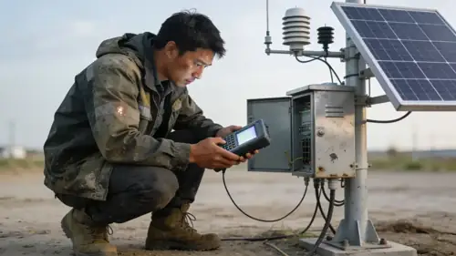
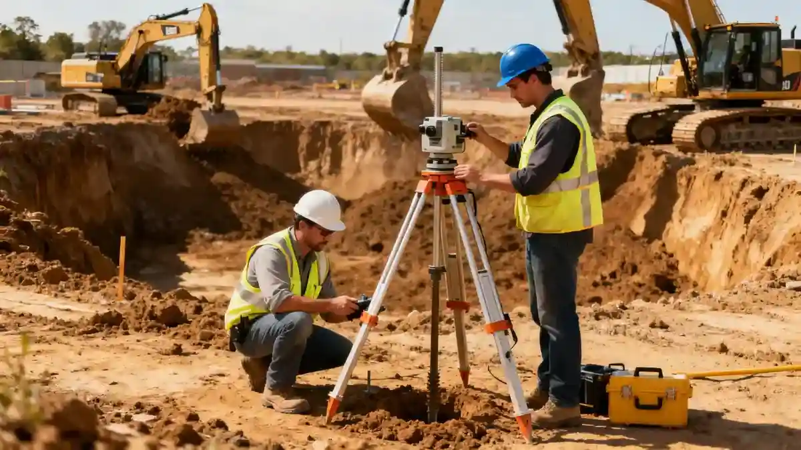

Metodología

La metodología de trabajo se estructura en tres fases. Primero, una campaña de reconocimiento mediante sondeos mecánicos con extracción continua de testigo y ensayos de penetración estándar (SPT), complementados con calicatas y geofísica superficial. Segundo, los testigos se trasladan a nuestro laboratorio de mecánica de suelos, donde se determinan parámetros como granulometría, límites de Atterberg, resistencia al corte y permeabilidad. Tercero, los resultados se integran en un modelo geotécnico que sirve de base para el diseño de cimentaciones, contenciones y taludes. Este proceso sistemático se aplica a proyectos de edificación, obra lineal y obra civil, garantizando trazabilidad y cumplimiento normativo.
Parámetros Técnicos Referenciales
| Parámetro | Valor Referencial |
|---|---|
| Zona sísmica (aceleración básica ab) | 0.04 – 0.26 g (según NCSE-02) |
| Profundidad habitual de sondeo | 15 – 30 m (edificación convencional) |
| Resistencia a compresión simple (roca) | 1 – 100 MPa (dependiendo del macizo) |
| Módulo de elasticidad (suelo granular) | 10 – 50 MPa (arena media a densa) |
| Coeficiente de empuje en reposo K0 | 0.4 – 0.6 (suelos normalmente consolidados) |
Consideraciones Locales — España
España presenta una notable diversidad geotécnica. En la mitad norte predominan suelos arcillosos y limosos de origen glaciar y fluvial, con niveles freáticos someros (1-3 m) en valles. La zona central y sur muestra suelos detríticos (arenas y gravas) con frecuentes intercalaciones arcillosas, mientras que el litoral mediterráneo alberga depósitos aluviales y dunares. La sismicidad se regula mediante la NCSE-02, que divide el territorio en zonas de aceleración básica entre 0,04 y 0,26 g (zona más activa: sur y Pirineos). En áreas como el Valle del Ebro, la presencia de yesos y sales expansivas exige ensayos específicos de agresividad al hormigón. Un error recurrente es no considerar la variabilidad lateral de los depósitos aluviales, lo que lleva a cimentaciones mal dimensionadas.
Solicite una Cotización
Nuestro equipo evalúa su proyecto y emite informe inicial sin compromiso.
O escríbanos directamente a contacto@estudiogeotecnico.org
Normativa Aplicable
- UNE 103-200:1994 (Determinación de la resistencia a compresión simple en suelos)
- UNE 103-400:1998 (Ensayo de penetración estándar SPT)
- NCSE-02 (Norma de Construcción Sismorresistente Española)
- Eurocódigo 7 (EN 1997-1:2004) – Proyecto geotécnico
Preguntas Frecuentes
¿Qué incluye un estudio geotécnico según la normativa española?
Un estudio geotécnico comprende la campaña de reconocimiento (sondeos, calicatas, ensayos in situ), ensayos de laboratorio, análisis de cimentación, y un informe con recomendaciones conforme a la UNE y al Eurocódigo 7.
¿Cuántos sondeos se requieren para una vivienda unifamiliar?
Para una vivienda unifamiliar típica se recomienda al menos un sondeo de 10-15 m de profundidad, complementado con dos calicatas. El número exacto depende de la superficie y la complejidad geológica.
¿Es obligatorio aplicar la NCSE-02 en toda España?
Sí, la NCSE-02 es de aplicación obligatoria en todo el territorio nacional para edificaciones de nueva planta. La zonificación sísmica determina la aceleración de cálculo y los requisitos de ductilidad.